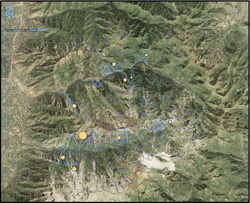

This is a map of the mountains outside of Salt Lake City. The dots show the graduated scale of this areas avalanches.

This is a map of same mountains but mapped according to frequency of avalanches.

This map is showing avalanches by length of slide.

This is a map showing the same data as prior map but with graduated symbols.